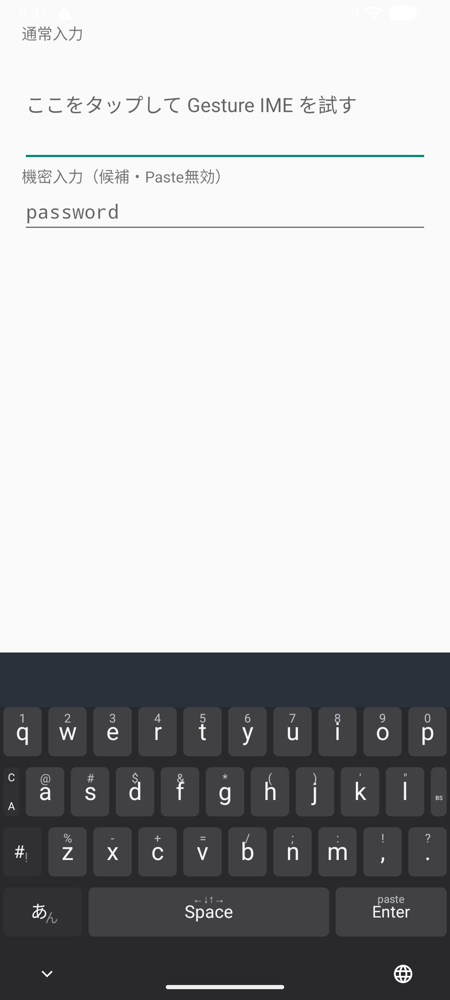

連打しない12キー
かなは中央と四方向から直接選びます。入力した読みはMozcが端末内で変換し、候補をキーボード上に表示します。
Android IME for Galaxy Z Fold7
日本語、英字、数字、記号、カーソル操作を、五つのレイヤーと一つのジェスチャー体系にまとめたAndroidキーボードです。変換には端末内のMozcを使います。

左下のレイヤーキーを上下左右へ動かすと、どの画面からでも同じ方向へ移動します。キー配列を探し直す回数を減らし、外画面と内画面で操作を変えません。
かなは中央と四方向から直接選びます。入力した読みはMozcが端末内で変換し、候補をキーボード上に表示します。
タップで小文字、上でその一文字だけ大文字、下で数字またはASCII記号を入力します。
Spaceを動かすと最初の方向で縦軸か横軸が決まり、指を離すまで斜め移動を防ぎます。
C/Aキーは上でAlt、下でCtrlを選びます。次の一キーへ適用した後、自動で解除します。
設定でDual Flickを有効にすると、Fold7を開くなど横幅が広いとき、日本語の12キーを左右2組表示します。狭い画面では自動で1組に戻ります。
対応端末では、日本語の認識結果を確認してから入力欄へ確定できます。録音と認識結果を保存せず、通信型の認識へ切り替えません。
IMEは入力欄の内容へ触れるソフトウェアです。Gesture IME v0.3.0は通信機能を持たず、Mozcの辞書と変換処理をAPKへ収めています。
入力、候補生成、確定まで通信を使いません。入力文字列をログへ記録しません。
音声入力時だけマイク権限を求めます。録音音声と認識結果を保存せず、ネットワーク権限も要求しません。
Interactive reference
操作モックでは五つのレイヤーとフリックをブラウザ上で試せます。モックの変換候補は説明用の内蔵辞書で、Android版のMozcとは異なります。